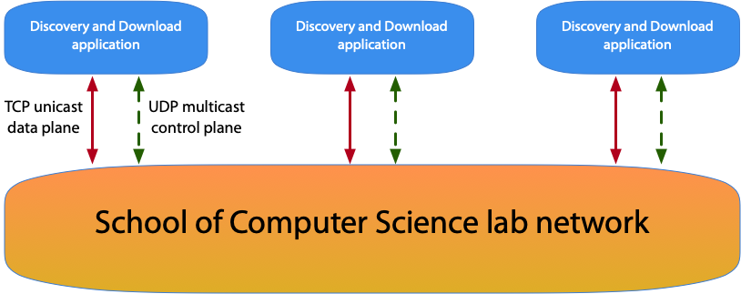

| Assignment: | P2: Discover and Download |
| Deadline: | 9pm on Friday 21st November; note that MMS is the definitive source of deadline information. |
| Weighting: | 50% of the coursework component of the module (30% of the overall module assessment) |
In this practical, you will build a distributed file transfer application, paying particular attention to the design and implementation of its multicast control plane protocol, and how this protocol interacts with user commands. In undertaking this practical, you will:
gain depth and breadth in your understanding of the design and operation of protocols;
gain some practical insight into and experience with the key challenges in designing, building, and testing protocols;
gain some practical experience with using multicast and IPv6 in a local network; and
perform a critical analysis of your design and implementation, with paying particular attention to scalability, performance, security, and privacy.
The basic scenario for your application is as shown in Figure 1. In this setup, multiple users run a file sharing application. This advertises their presence on the School of Computer Science lab network, and all other nodes will automatically detect their presence. The user can then use the application to search for and download files from the other users that are present on the network.

To enable this functionality, you must use IPv6 multicast to create a control plane for (i) discovering other nodes; (ii) searching for files; and (iii) signalling file download. The file transfers will use TCP, also over IPv6.
A simple local file system browser is provided as starter code, in both Java and Rust. You may modify and extend this in order to complete the coursework. In addition, other helper code has been provided on StudRes, and you may make use of this, or any other code made available to you in previous years (e.g., on CS2003 or CS3102). In addition, you may make use of any third-party code or libraries as you see fit. Note that the Good Academic Policy applies (as detailed below), and therefore you must attribute any code that you use appropriately.
Your implementation must provide a simple text-based UI to the user to provide the required functionality. The implementation will then map the user’s input to the necessary control and data plane message(s).
Each lab machine has an IPv6 link-local address. However, fully qualified domain names (FQDNs) will not resolve to IPv6 link-local addresses within the School’s network.
The control plane protocol is specified in protocol.txt
as provided on StudRes. This definition is not designed to be complete
or efficient; a significant part of the work required on this practical
will be to implement and enhance this protocol as necessary.
This practical is split into four main tasks: discovery (§5.1), search (§5.2), download (§5.3), and analysis (§5.4).
:nodes)Your application must implement a discovery mechanism using IPv6
multicast, and the advertisement message defined in the
protocol specification. This discovery mechanism allows your application
to find other nodes that are running the same application on other hosts
in the School lab. Your application must allow the user to list the
discovered nodes using the :nodes command.
:search)Your application must allow the user to search for available files
using the :search command. This should be implemented using
the search-request, search-response, and
search-error messages defined in the protocol
specification. The search capability must allow for searching based on a
sub-string match for a full logical path name (i.e., the path name using
the logical root directory of your file space). The
advertisement message must signal that search is
possible.
:download)Your application must allow the user to download files using the
:download command. The download itself must take place over
TCP (over IPv6). The download capability must be signalled in the
advertisement message, but the download signalling itself
will require you to extend the protocol specification as you see fit.
Stubs for download-request, download-response,
and download-error messages are provided.
You must critically evaluate the control plane protocol design as provided, your extensions to it, your implementation of it, and how it operates in practice. Your discussion must consider scalability, performance, security, and privacy.
Your MMS submission should be a single zip file that contains two
items: a report (as a PDF) and a code/ sub-directory.
Anything that you submit must be able to be viewed, executed, or
processed using the Linux lab machines without any additional third
party tools or libraries.
A clear, well-written report, of around 5-7 pages is what is expected. Your report should be a single PDF file, detailing your design, implementation, and critical analysis, with the following sections:
Introduction
Discovery, including a description of the operation and testing of the discovery functionality;
File search, including discussion of the design, operation, and testing of the search functionality;
File download, including the protocol specification, design, operation, and testing of the download functionality;
Analysis, presenting your critical evaluation of the protocol as described above;
Conclusion
code/ directoryYou should include a separate sub-directory named code/,
which should contain the source files of your implementation. This must
include your modified protocol.txt and configuration files,
alongside a code/logs/ sub-directory to accompany the
discussion of your testing.
Your mark will depend on the overall quality and completeness of your submission with respect to the tasks listed, including what you write in your report. The submission will be marked on the University’s common reporting scale, according to the mark descriptors given in the CS Student Handbook (at https://info.cs.st-andrews.ac.uk/student-handbook/learning-teaching/feedback.html#Mark_Descriptors).
| Lateness penalties: | The standard penalty for late submission – Scheme A: 1 mark per 24-hour period, or part thereof – will be applied automatically by MMS. (see: https://info.cs.st-andrews.ac.uk/student-handbook/learning-teaching/assessment.html#lateness-penalties) |
| Good Academic Practice: | The University’s policies on Good Academic Practice apply to this assessment (see: https://info.cs.st-andrews.ac.uk/student-handbook/academic/gap.html). |